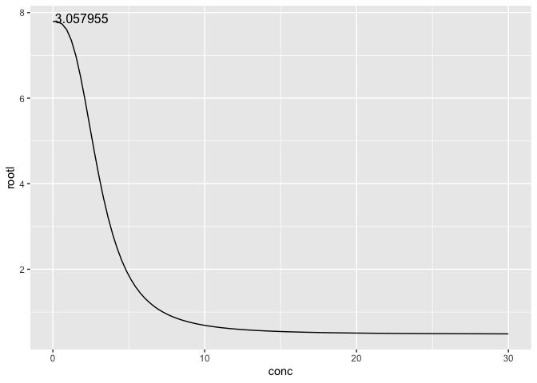
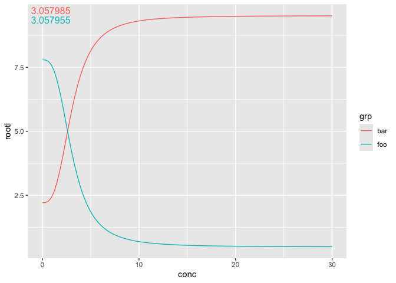
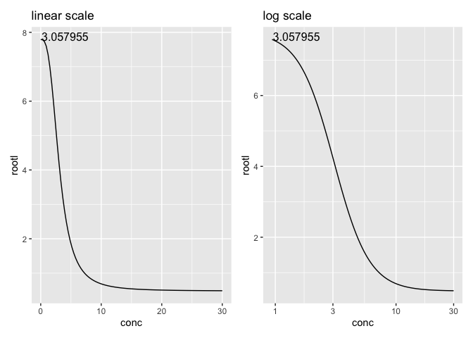

ggdose provides a layer to calculate dose response relations in ggplot. It relies on the drc package to handle the math.
Installation
You can install the development version of ggdose from GitHub with:
devtools::install_github("myuhao/ggdose")Example
Use geom_4PL() in ggplot. It will plot the dose response curve for you. The EC50 values will be plotted in the upper right corner.
library(ggdose)
#> Loading required package: drc
#> Loading required package: MASS
#>
#> 'drc' has been loaded.
#> Please cite R and 'drc' if used for a publication,
#> for references type 'citation()' and 'citation('drc')'.
#>
#> Attaching package: 'drc'
#> The following objects are masked from 'package:stats':
#>
#> gaussian, getInitial
#> Loading required package: ggplot2
#> Loading required package: dplyr
#>
#> Attaching package: 'dplyr'
#> The following object is masked from 'package:MASS':
#>
#> select
#> The following objects are masked from 'package:stats':
#>
#> filter, lag
#> The following objects are masked from 'package:base':
#>
#> intersect, setdiff, setequal, union
#> Loading required package: magrittr
#> Loading required package: tidyr
#>
#> Attaching package: 'tidyr'
#> The following object is masked from 'package:magrittr':
#>
#> extract
library(ggplot2)
drc::ryegrass |>
ggplot(aes(x = conc, y = rootl)) +
geom_4PL()
Within the same panel, different group (color/fill) will be treated separately.
list(
foo = drc::ryegrass,
bar = dplyr::mutate(drc::ryegrass, rootl = 10 - rootl)
) |>
dplyr::bind_rows(.id = "grp") |>
ggplot(aes(x = conc, y = rootl)) +
geom_4PL(aes(color = grp))
geom_4PL() ignore all transformation made with the x axis, such as scale_x_log10().
scale_1 = drc::ryegrass |>
ggplot(aes(x = conc, y = rootl)) +
geom_4PL() +
labs(title = "linear scale")
scale_2 = drc::ryegrass |>
ggplot(aes(x = conc, y = rootl)) +
geom_4PL() +
scale_x_log10() +
labs(title = "log scale")
patchwork::wrap_plots(scale_1, scale_2, ncol = 2)
geom_4PL() does not plot individual data point that are used for the dose response relation. Use it in conjunction with other geom to achieve the desired look.
drc::ryegrass |>
ggplot(aes(x = conc, y = rootl)) +
geom_pointrange(stat = StatSummary) +
geom_4PL()
#> No summary function supplied, defaulting to `mean_se()`